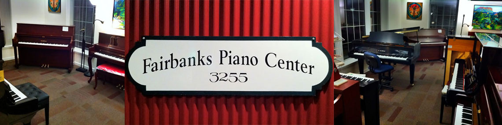
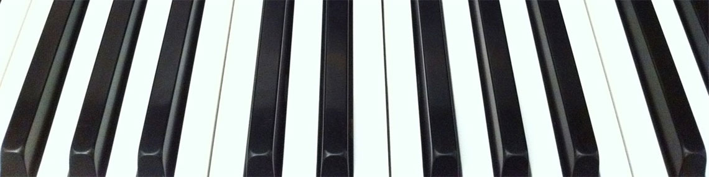
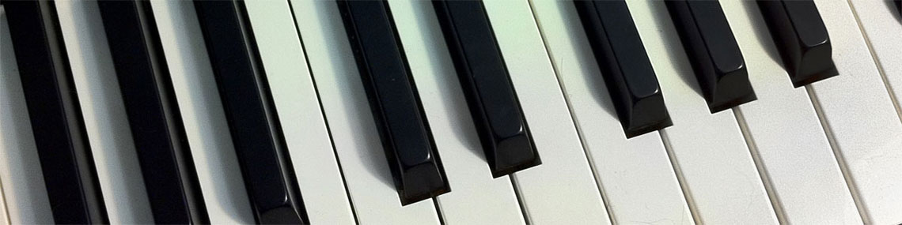
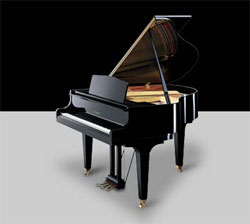

We have a good assortment of new Kawai pianos, both vertical and grands, in our Fairbanks showroom.
Read more…
-
-

-

-

Just another WordPress site

Fairbanks Piano Center is the authorized dealer for Kawai Acoustic Pianos and Digital Pianos in the Fairbanks, Alaska area. We are the only dealer in Alaska for Kawai acoustic pianos. We carry a good inventory of new Kawai pianos and keyboards in our Fairbanks showroom along with an always-changing variety of good quality used pianos.
Here at Fairbanks Piano Center we believe that after-sales service is as important as the pianos we sell. We offer expert piano service, tuning and rebuilding and we also specialize in the installation and maintenance of Dampp-Chaser piano humidifier system installers.
In addition, we sell popular piano-related products such as metronomes, polish, piano benches and bench pads.
If it’s any aspect of living with a piano, we do it!